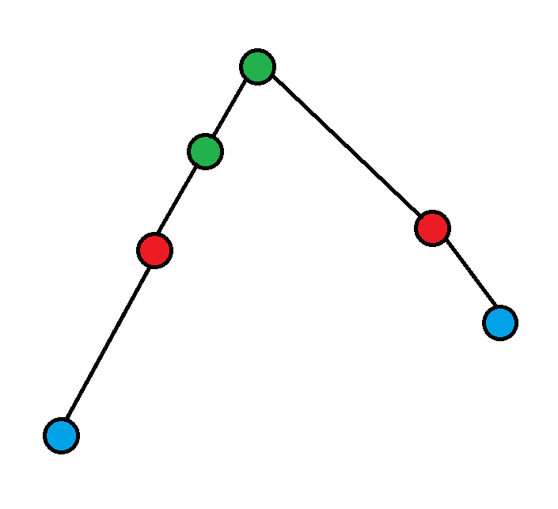

CCPC 2023 网络赛赛后总结
A
一个经典的 trick ：
$(x+1)^k$ 可以用 $x^k,x^{k-1}…x,1$ 表示出来，所以如果一个维护段数的 $k$ 次方的转移只需要同时维护 $x^k,x^{k-1}…$ 的值就可以转移了。
具体来说，这道题目可以用 Hash+二分 非常轻松的求出以一个位置为起点的合法分割位置的最远处。
然后如何做呢？
考虑 $f_i$ 表示以 $i$ 开始的后缀的权值和（包括方案数、段数和、段数平方和），那么设 $g_i$ 表示在 $f_i$ 的基础上再增加一段的权值和。
然后 $g$ 后缀和，每次需要的时候提取区间和就行了。
时间复杂度：$O(n\log{n})$
B
我的做法：
其实我在赛场上想的是点分治+树链剖分，$log^2$ 的，太屎了，没写，但是实际上如果我当时注意到时间复杂度其实和点分治没有太大关系，就应该意识到这道题目应该可以不用点分治，直接暴力 $DFS$ 枚举链的 $lca$ 。
具体来说，我的做法这样：
考虑序列怎么做？对于每个区间 $[l,r]$ ，从大到小处理 $l$ ，然后线段树找前缀 $r-1$ 的最大值 +2 ，然后在 $r$ 处插入供后面的位置更新。
对于树也类似，考虑把点对分成两种类型：
- 点对的一个点是另外一个点的祖先。
- 以及其余情况。
首先 DFS 一整棵树，然后考虑当一个点的子树遍历完时，开始考虑这个点作为回文子序列的根。
把每个点对扔到其的 $lca$ 上，当考虑 $x$ 为根时，考虑把 $x$ 身上的所有点对排序，按照点对中 $dfs$ 序最小值从小到大排序。
然后依次遍历点对。
假设点对中 $dfs$ 序小的点为 $l$ ，大的点为 $r$ ，这个点对作为回文子序列外边界的最长长度为 $r$ 到根的最大权值 和 $l$ 到根的最大权值的最大值 $+2$ ，得到权值后把权值填在 $r$ 。
同时点对的影响可能会被撤销，具体来说，如果这个点对是 $2$ 类型，设这个点对为 $l_1,r_1$ ，当前点对为 $l_2,r_2$ ，如果 $l_1$ 不是 $l_2$ 的祖先，就把 $r_1$ 的贡献撤销掉。
那么就只需要一个单点修改，到根节点最大权值的数据结构，树剖即可。
经典序列上树了，属于是。
举个例子吧：

首先是绿点对更新，然后红点对再更新，蓝点对再更新。
其次，其实没必要查询到根节点路径上的最大权值，查到 $x$ 就可以了，不过鉴于 $fa_x->$ 根的路径上没有权值，所以影响不大。
然后多考虑一点细节应该就可以了。
这题的重点就是该转移的一定要转移，例如红点对一定要在蓝点对之前更新，且一定要有方式能够转移到蓝点对。
不能转移的一定不能够转移，比如撤销操作。
考虑清楚转移顺序这道题目其实就做完了。
时间复杂度：$O(n\log^2{n})$
C
不会。
D
不会
E
暴力题。
F
显然只需要保留很少的点就行了。
重点是要保留多少点，当时分析 SB 了，以为需要保留至多 $7$ 个点。
同机房别的队是 $5$ 个点。他们的说法是：最大值 $a_1$ 、与 $a_1$ 不同行的最大值 $a_2$、与 $a_1$ 不同行与 $a_2$ 不同列的最大值，$a_3,a_4$ 与 $a_2,a_3$ 类似。
其实分析一下可以发现最多是 $4$ 个点，上面其实有两个点是重复的。
官方题解
不过官方题解的做法感觉也非常的精妙：
考虑 $f(x,y)$ 为与 $(x,y)$ 不同行列的最大值（就是询问的那玩意）。
从大到小考虑，点对 $(x,y,w)$ 为考虑把十字以外的部分都给赋上自己的值，如果一个点对没有更新任何一个位置的值，其就是无用的。
整个图的状态有以下几种：
全集、十字、一条竖线、一条横线、两个不在同行同列的格子、一个格子，空集。
根据转移，显然只会有四个有用格子。
排除格子的方式也很简单，把所有当前有用的格子从大到小排序，然后维护图的状态，转移，转移失败就将点对标为无效然后继续。
时间复杂度：$O(q)$
空间复杂度：$O(1)$
G
不难。
首先当 $m=2$ 时显然只有一种合法情况，直接找到输出。
对于 $m>2$ 的情况，我们可以定义一种字符的权值为：把不是这个字符的位置赋值为 $0$ ，是这个字符的位置赋值为 $1$ 得到的 $m$ 进制数。
然后我们就可以得到 $cnt$ 个权值，$cnt$ 为不同字符数量。
我们设 $A$ 为一种合法情况。
先说一个等式：$gcd(a,b)=gcd(a,a-b)$，考虑通过调整得到所有合法情况。
当 $cnt<m$ ，对于任意一个字符，都存在一种合法情况 $B$ 可以使这个字符的代表数值 +1 得到新的合法情况 $B’$ ，根据上面的等式，我们可以知道，我们的答案一定是所有字符权值的一个公因数。
我们设 $d$ 就是所有字符权值的公因数，这是必要条件，考虑充分性，任意一个合法权值都是字符权值的线性组合，所以 $d$ 也是所有合法权值的因子，证毕。
当 $cnt=m$ 时，显然这个时候交换两个字符代表的权值就能得到所有合法情况，但是因为当 $m=2$ 时，首字母不能自由交换，所以要特判，$m>2$ 的情况显然首字母只要不和 $0$ 交换就行，想要和一个字符交换，如果是 $0$ 先移走就行了，而这个移走就需要 $m\ge 3$ 。
考虑两个字符上面的数值的差是 $d$ ，那么前后方案数的差为 $d*(val_1-val_2)$ ，$val$ 表示两种字符的权值，显然，$d$ 可以为 $1$ 。
这样就变成了求任意两种权值差值的 gcd ，显然，任意两种权值的差值的自由元是 $cnt-1$ 个，即：$a-c=(a-b)+(b-c)$ ，这样把所有自由元 $gcd$ 起来就行了。
时间复杂度：$O(T(|P|+m+\log{A}))$
H
我的做法
显然，$n≤5000$ 暴力。（UPD:这里错了，暴力复杂度是 $n^3$ 的，正确的做法看改造。）
设最大度数的点的度数为 $n-1-x$ ，首先 $nx\le 2m$。
显然，如果两个点之间的距离 $>2$ 的必要条件是度数和 $\le n-2$ ，所以不能和最大度数的点达成这个必要条件的度数必须 $<x$ ，设这种点数量为 $y$ ，设关键点数量为 $y$ 则 $(n-x)y\le 2m$ 。
发现当 $n\ge 5000$ 时 $x$ 最大为 $80$ （其实 $x$ 的量级为：$O(\frac{m}{n})$），则 $(n-x)$ 接近 $n$ ，所以 $y\le O(\frac{m}{n})$ 。
显然，对于非关键点的图，可以直接处理，因为距离 $\le2$ 把距离 $=2$ 的处理出来就行了。
对于包含关键点的图，考虑重构图，关键点之间的连边保留。
考虑 $dis[x][y]$ 表示关键点 $x$ 到非关键 $y$ 的距离，同时有限制，必须每条边都走到非关键点，显然这样走要么到达不了，要么距离 $\le 3$ ，考虑暴力走两步，时间复杂度：$yxn\le O((\frac{m}{n})^2*n=\frac{m^2}{n})$ ，然后把两端不是都是关键点的边删了，连接新边：$x,y$ 连边，权值为 $dis[x][y]$ 。（其实思考一下可以发现不用连 $dis[x][y]=3$ 的边）
然后以每个关键点为起点跑最短路或者边权 $\le 3/2$ 的 BFS ，然后就做完了。
时间复杂度：$O(min(\frac{m^2}{n},n^2))$ 。
改造
看了官方题解，重新审视了一下我的做法。
可以发现，开始的暴力不跑会导致哪些权值的量级受到影响：
$x-O(\frac{m}{n})$ ，不受影响。
$y$ 因为我们估计了，会受到影响，但是我们不妨重新估计一下。
- 假如 $x\le \frac{n}{2}$ ，那么 $n-O(\sqrt{m})$ ，所以 $y\le n$ ，所以 $y-O(\sqrt{m})$ 的，此时与 $O(\frac{m}{n})$ 同阶。
- 当 $x> \frac{n}{2}$ 时， $(n-x)-O(n)$ ，所以也是 $O(\frac{m}{n})$ 的。
所以实际上，不跑那个暴力，我的做法依旧是 $O(\frac{m^2}{n})$ 的。
同时，其实可以发现一个事情：$O(\frac{m}{n})\le O(\sqrt{m})$ 因为 $m\le \frac{n(n-1)}{2}$ 。
所以，我的做法就和题解时间复杂度一样了：$O(m\sqrt{m})$ 。
官方做法
首先，题解提到的补图单源最短路我猜测是：每个点只走向目前没有被更新到的点，那么每个点被访问的次数总和显然是 $O(n+m)$ 的。
然后，其实在我的做法中的改造中也提到了，如果我们把度数小于 $\frac{n}{2}$ 的点都设为关键点，复杂度实际上是不变的。
官方做法也是类似，只不过是直接以关键点跑单源补图最短路，时间复杂度就是 $O(\frac{m^2}{n})=O(m\sqrt{m})$ 。（就是涉及关键点的部分我是改造了一下图再跑的，官方题解是直接跑单源补图最短路）
现在问题就是，怎么在 $O(n+m)$ 的时间内跑出单源补图最短路。（之前的做法空间是 $O(n^2)$ 的）
考虑当前跑到了 $x$ ，把 $x$ 所有不能到达的点标记一下，暴力跑当前没有跑到的点，如果没有被标记就是可以跑到，这样时间复杂度是对的。
标记的部分是 $O(m)$ 的，所有点都走一遍是 $O(n)$ 的，同时遍历时一个点有标记的次数总和也是 $O(n+m)$ 的，所以总时间复杂度是： $O(n+m)$ 的。
然后就做完了。
根本不需要什么复杂的改造原图的过程，也不需要什么大型的分类讨论，关键点非关键点乱搞一通，删边再连边啥的，代码会好写很多。
直接跑几遍朴实无华的单源补图最短路就做完了，但是可惜啊，在做这道题目之前，我并不会这个科技啊QAQ。
扩展
- 图中 $\ge 2$ 或者不能到达的点对个数为恰好 $m$ 个。
因为充要条件为 $x,y$ 之间的边被删除了。 - 路径长度至多是 $O(\sqrt{m})$ 的。
因为路径上的非相邻点之间的边都必须被删除，所以假如路径长度为 $x$ ，那么被删除的边的数量级就是 $O(x^2)$ 的。
这两个性质我赛场上一个都没有发现，乐。
I
不会。
J
显然，平面两种情况，三个点在一个面上（$n^4$），和两个面上各有两个点（$n^5$）。
直接 $n^5$ 可以过。
原因：常数极小，比如一个线段只用枚举一次，就可以除 $2$ ，两条线段就是除 $4$ ，然后还有可能还没枚举完就判 NO 等等，都导致这个做法实际上常数很小。
所以 $n^5$ 可以直接过，乐。
K
不会
L
非常有意思的一道题目。
准确来说，我们可以这么模拟这个过程，钦定一个 $b_{limit}$ ，然后对于 $b_i\le b_{limit}$ 的所有 $a_i$ 中挑选个前 $k$ 小的。
这样，存在决策单调：
$k_1<k_2$ ，那么 $k_1$ 的最优决策对应的 $b$ 要 $≤$ $k_2$ 最优决策对应的 $b$ 。
然后直接分治就做完了。
证明也是非常简单，显然 $b_{limit}$ 越大 ，$a$ 的选择越多，所以 $b_{limit}$ 越大，在 $k$ 增大的过程中新加的数字肯定会越优秀。
所以当 $k$ 增大时，小的 $b_{limit}$ 会越来越劣，大的 $b_{limit}$ 会越来越优，然后就证完了。
可以在分治过程中线段树/平衡树，也可以直接上主席树+分治。
时间复杂度：$O(n\log^2{n})$ 。
坑
- 等gym出了补题，顺便补一下地址。
- 亲手写一些代码，例如：口胡或者知道做法但是没有写的题目。
- 把没有做的题目自己做一遍。
- 自己去看一遍官方题解并且补充一下官方题解的做法。